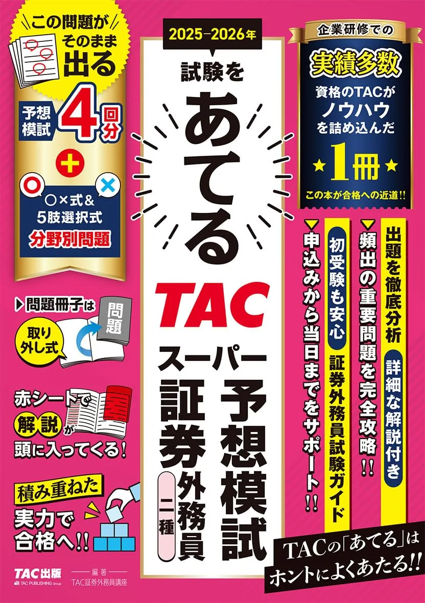
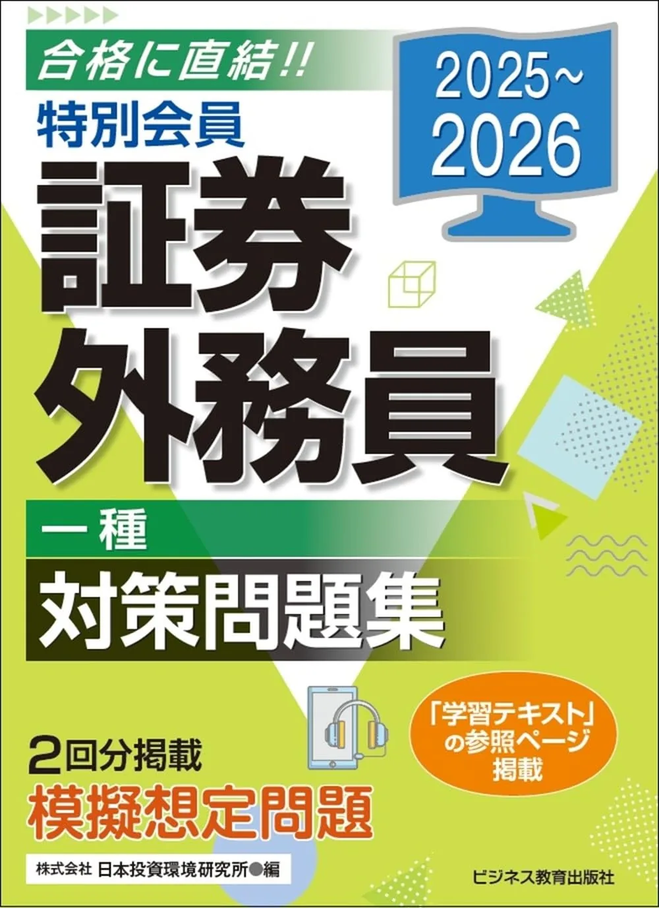

証券外務員試験のおすすめ模試・直前問題集3選【通し演習·2026】
証券外務員試験の直前対策は、通し演習と予想模試で本番形式に慣れるのが効果的です。二種は70問120分·300点満点·210点合格、一種は100問160分·440点満点·308点合格。合否は総合7割のみ（分野別最低ラインなし·要項で再確認）です。本記事は2025-2026年度版の模試·直前向け3冊を、通し回数·区分·価格の観点で比較します。
この記事の信頼性について
| 執筆 | 証外マスター編集部（資格学習サイトの編集チーム） |
|---|---|
| 確認 | 公式情報確認担当（公開前に一次情報との照合を行う担当者） |
| 事実確認日 | 2026-06-16 |
| 主な参照元 |
1模試·直前教材を選ぶ3基準（タイミング·通し回数·区分）
模試·直前問題集は、テキスト·通常問題集の後に置くのが基本です。第1周前や科目別演習の初期段階で模試だけ増やすと、弱点の特定が難しくなります。選ぶ前に要項で一種/二種と70問120分または100問160分を確認し、次の3点で比較してください。具体例として8月末に問題集80%到達なら、9月7日から通し演習1回目·11月2日に予想模試、という8週逆算と整合します。
| 観点 | 確認内容 |
|---|---|
| 購入タイミング | 問題集80%以降·残り8週以降 |
| 通し回数 | 月1回×2回+予想模試1回が目安 |
| 区分 | 一種100問160分 vs 二種70問120分 |
科目別演習は 証券外務員試験のおすすめ問題集3選、演習サイクル全体は 証券外務員試験の過去問·模試の使い方 が詳しいです。本記事は通し·予想模試向け3冊の比較に特化します。
おすすめ模試·直前対策3選（比較）
価格·在庫·版情報は執筆時点（2026-06-16）のAmazon税込参考です。購入前に必ず販売ページでご確認ください。
| 順位 | 商品名 | 価格（税込参考） | ページ数 | 向いている人 |
|---|---|---|---|---|
| 1 | TACスーパー予想模試 証券外務員一種 2025-2026年版 | ¥2,420 | 536 | 一種100問160分·予想模試3回+CBTガイドで直前の通し演習を固めたい人 |
| 2 | TACスーパー予想模試 証券外務員二種 2025-2026年版 | ¥2,090 | 444 | 二種70問120分·210点合格を予想模試で通し演習したい人 |
| 3 | 2025-2026 特別会員 証券外務員 一種 対策問題集 | ¥1,650 | 240 | 低価格帯で模擬想定問題+習熟チェック表を使いたい一種受験者 |

TACスーパー予想模試 証券外務員一種 2025-2026年版
- 予想模試3回分+分野別問題+CBT試験ガイド付き
- 100問160分の通し時間配分を本番前に再現しやすい
- 赤シート対応で直前の暗記確認にも使える

TACスーパー予想模試 証券外務員二種 2025-2026年版
- 二種出題範囲に絞った予想模試構成
- 70問120分の配分練習に特化
- TAC一種模試と同系列で出版社を揃えやすい

2025-2026 特別会員 証券外務員 一種 対策問題集
- 本試験同一配分の模擬想定問題を収録
- 習熟チェック表で科目別の進捗を記録できる
- 240ページで直前の総仕上げ向けコンパクト構成
23冊の比較表（価格·ページ·模試形式）
比較表は「安い順」ではなく、受験区分と通し演習の目的で判断してください。執筆時点（2026-06-16）のAmazon税込参考です。購入前に再確認が必要です。
| 順位 | 書名（略） | 区分 | ページ | 価格参考 | 模試形式 |
|---|---|---|---|---|---|
| 1位 | TAC予想模試 | 一種 | 536 | 2,420円 | 予想3回+CBTガイド |
| 2位 | TAC予想模試 | 二種 | 444 | 2,090円 | 予想模試通し |
| 3位 | BEP特別会員一種 | 一種 | 240 | 1,650円 | 模擬想定+習熟表 |
- 一種308点合格なら1位か3位
- 二種210点合格なら2位
- という切り分けが定番
3冊同時購入は避け、手持ち問題集の巻末模試+予想模試1冊で足りるか先に確認してください。うかる!シリーズに単独の「直前チェック」刊行は2026年6月時点でありません。
31位：TACスーパー予想模試一種（536ページ·予想3回）
【予想模試3回分】2025-2026年試験をあてる 証券外務員一種 TACスーパー予想模試は、TAC出版·536ページ·分野別問題+CBT試験ガイド付きです。予想模試3回分で100問160分の通し感覚を本番前に固めやすい1冊です。Amazon税込参考2,420円（執筆時点）。
| 項目 | 内容 |
|---|---|
| 向く人 | 一種100問160分·予想模試複数回 |
| 強み | 3回分+CBTガイド·赤シート対応 |
| 注意 | 二種のみ受験には範囲過多 |
向いている人：問題集80%到達後、11月に100問160分通しを月1回×2回+予想模試1回入れたい一種受験者。一例として11月2日に1回目、11月16日に2回目、得点より分野別の時間配分表を 証券外務員試験当日の流れ のフォーマットで記録する、という直前8週計画と相性がよいです。
42位：TACスーパー予想模試二種（444ページ·70問120分）
2025-2026年試験をあてる TACスーパー予想模試 証券外務員二種は、TAC出版·444ページ·二種70問120分·210点合格向けの予想模試です。一種向け536ページより範囲が絞られ、短サイクルで通し演習できます。Amazon税込参考2,090円（執筆時点）。
| 項目 | 内容 |
|---|---|
| 向く人 | 二種70問120分·210点合格 |
| 強み | 二種専用·予想模試通し |
| 注意 | 一種受験には範囲不足 |
向いている人：うかる!最速問題集（4296050850）で科目別演習後、10月·11月に70問120分通しを月1回入れたい二種独学者。例として10月5日と11月2日に通し、誤答は 証券外務員試験の誤答ノートの作り方 の4分類で必携章へ戻る、という配分が 証券外務員試験の制限時間演習 の例と整合します。
53位：BEP特別会員一種対策（240ページ·模擬想定付）
「2025-2026 特別会員 証券外務員 一種 対策問題集」は、ビジネス教育出版社·240ページ·Amazon税込参考1,650円です。本試験と同一配分の模擬想定問題と習熟チェック表があり、低価格帯で直前の総仕上げ向け演習が可能です。弱点問題のチェック欄付きで、解き直し90％の管理にも使えます。
| 項目 | 内容 |
|---|---|
| 向く人 | 一種·低予算·模擬1回+習熟表重視 |
| 強み | 模擬想定問題·240pコンパクト |
| 注意 | 予想3回分の厚みはTAC一種が上 |
向いている人：TAC予想模試の予算を抑えつつ、11月に100問160分通しを1回入れたい一種308点合格志望者。通常の科目別演習は 証券外務員試験のおすすめ問題集3選 の1冊で済ませ、本冊は直前4週の模擬想定+解き直しに特化する使い方が現実的です。
6直前8週の演習配分（通し·模試·解き直し）
直前8週は、新規インプットより通し演習と解き直しに寄せます。6月16日開始·残り8週·週8時間の例です。
| 時期 | 演習 | 記録 |
|---|---|---|
| 9月第1週 | 問題集通し1回 | 分野別正答数·所要時間 |
| 10月第1週 | 問題集または当サイト通し1回 | 210点/308点換算 |
| 11月第1週 | 予想模試1回（TAC等） | 配分表·時間オーバー分野 |
| 直前2週 | 誤答解き直し90％ | 上位20問を毎日5問 |
模試の得点より、100問160分または70問120分で「時間内に解き切れたか」を 証券外務員試験の合格点·合格基準 の表に残してください。睡眠7時間は 証券外務員試験·前日·当日の持ち物リスト と同様、直前も最優先です。
7購入順序と次に読む記事
教材の購入順序は固定です。①外務員必携4巻 → ②市販テキスト1冊 → ③問題集1冊 → ④模試·直前（任意）。④は③を80%使い切った後、試験8週前までに版を固定してください。
・問題集比較 → おすすめ問題集3選
・演習サイクル → 過去問·演習の使い方
・模試の活用法 → 模試の活用法
・直前1週間 → 直前1週間の勉強法
・当日配分 → 当日の時間配分
新規購入は試験4週前に止め、手持ちの問題集·模試で通し演習を優先するのが基本です。
8よくある質問
模試は必須ですか？
直前に何を買いますか？
当サイトの演習で代用できますか？
記事の基本情報
| ジャンル | 過去問活用 |
|---|---|
| タグ | 過去問 / 模試 / 復習 |
公式情報の確認
公式情報の確認：証券外務員（一種・二種）の最新情報は、日本証券業協会（公式）などの公式情報を必ず確認してください。本人に割り当てられた試験会場は受験票の表記が正本です。